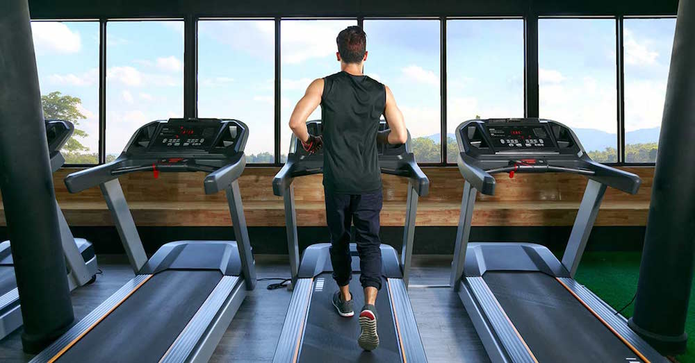
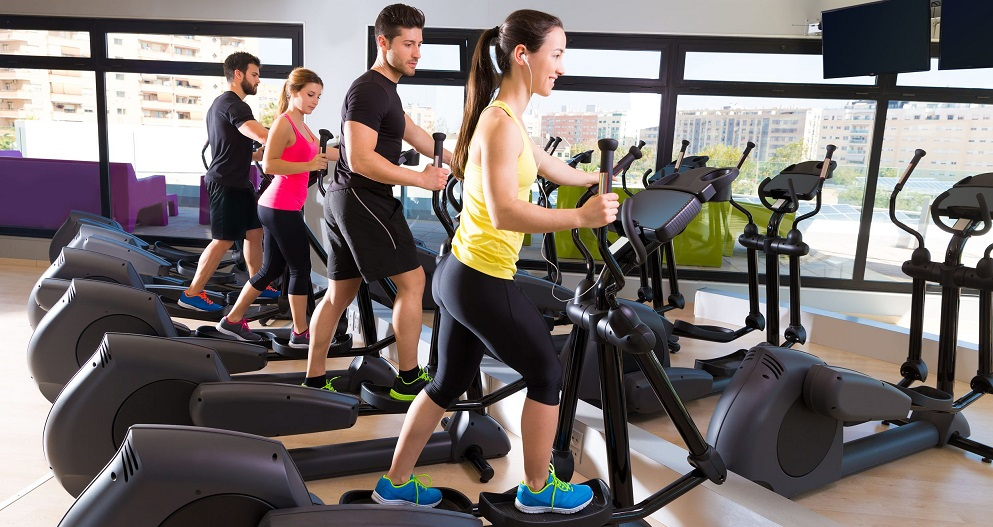
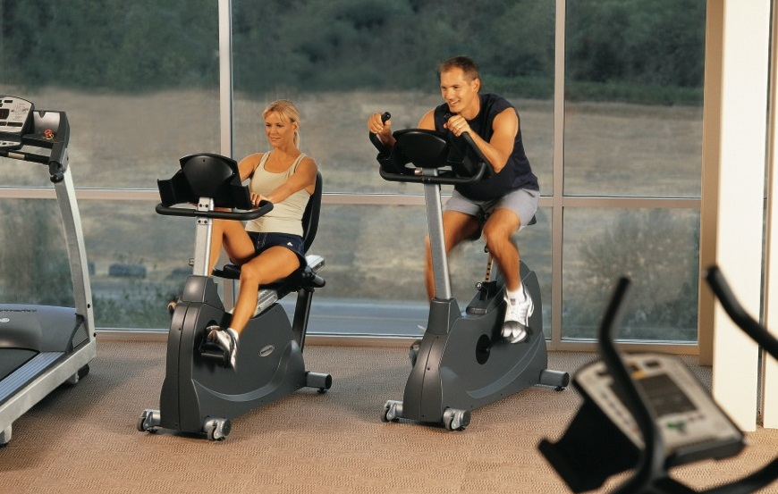

EQUIPOS PARA CARDIO
Cinta de CorrerEs una máquina por la que pasa prácticamente todos los socios del club , ya que permite un entrenamiento sencillo adaptado a todos los niveles gracias a su fácil control de la intensidad. |
Bicicleta VerticalLa Bicicleta Vertical o Bicicleta estática es otra de las máquinas de gimnasio de siempre está presente , tambien contamos con bicicletas vertical y además reclinadas, que facilitan la entrada y salida al entrenamiento a personas con menos agilidad. La bicicleta vertical te permite un entrenamiento cardiovascular intenso que te ayudará tanto a realizar calentamientos como pérdida de grasa. |
ElípticaEste equipamiento de gimnasio te permite no solo entrenar la parte inferior del tronco si no también de la parte superior, es una máquina muy utilizada en las instalaciones fitness tanto por hombres como mujeres, gracias a su versatilidad y entrenamiento completo del cuerpo . La maquina elíptica recomendable es por ejemplo la Elíptica Profesional BH LK8150 Smart Focus |
RemoOfrecerá a los usuarios más experimentados a utilizar otras opciones para realizar ejercicios cardiovasculares, y además permitirán que los usuarios más noveles prueben otro tipo de entrenamiento. |